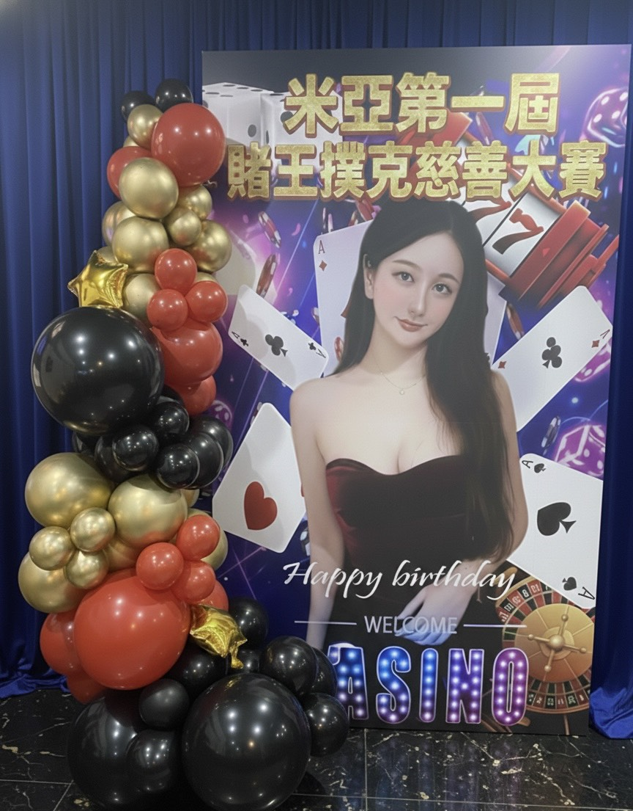

🎰 客製化賭場風活動佈置｜米亞第一屆賭王撲克慈善大賽視覺設計紀錄
在活動現場，視覺就是第一個說服力。打造專屬賭場風格的拍照殿堂！
📍 地點：板橋 SAMURAI 桌遊侍
大家好，我是氣球大叔 Sony！這次來到板橋的 SAMURAI 桌遊侍，挑戰了一個極具張力的主題——「米亞第一屆賭王撲克慈善大賽」。這場活動不僅僅是一場競賽，更是一次結合娛樂與公益的盛會。

「黑金紅」經典配色，打造大氣、專業的慈善賽事主視覺拍照區。
🎯 活動佈置核心：撲克牌 × 賭場風 × 黑金紅質感
主視覺背板融合了撲克牌花色、骰子、輪盤等元素，並特別進行了人像主視覺合成，讓主辦方的形象與主題完美契合。我在背板左側設計了「有機氣球拱門」，選用了金屬金、啞光黑與亮紅色的異材質組合，創造出不對稱的美感。
💡 為什麼你需要客製化活動視覺？
本案服務項目包含：
客製化活動背板設計、賭場風主題佈置、有機氣球拱門、企業活動拍照牆、慈善晚會視覺整合。
客製化活動背板設計、賭場風主題佈置、有機氣球拱門、企業活動拍照牆、慈善晚會視覺整合。
不管是企業年會、品牌發表或私人生日派對，一塊「好的背板」能讓活動檔次瞬間提升。當照片在社群媒體擴散時，專業的視覺設計就是最好的廣告。
"Sony 老師這次的佈置真的讓我們很驚艷！背板設計完全符合我們想要的賭場高級感，氣球的質感也非常棒，所有賓客一進來就在這裡拍個不停，真的幫我們的活動加了很多分！"
🎈 正在尋找板橋氣球表演或活動佈置嗎？
如果您也希望為您的活動創造像現場一樣爆棚的人氣與笑聲，氣球大叔 Sony 是您的首選！我們專注於提供高品質的互動演出：
- 百貨商場活動：中庭舞台秀、假日聚客、週年慶造勢。
- 品牌行銷推廣：客製化背板、門市開幕、VIP 客戶派對視覺。
- 親子家庭日：企業家庭日、社區晚會、私人高級生日派對佈置。
🔥 更多相關精彩活動紀錄：
服務地區：板橋、新北、台北、桃園、新竹皆可安排。
預約氣球大叔演出